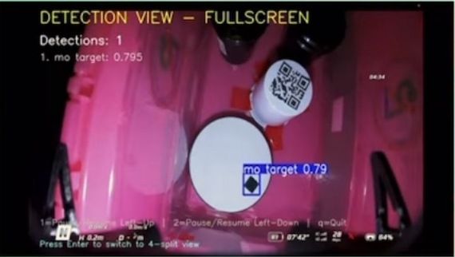

UI構成
- 表示内容: YOLO で学習した物体の検出と追跡を行い、経路やバウンディングボックスを表示
ギャラリー（クリックで拡大）

アルゴリズム・実装概要
- 入力/推論: OpenCV カメラ入力（1280x720/30FPS）に対して
YOLO('morsyon.pt')を適用。検出結果を annotated_frame として描画。 - 表示モード: 既定で全画面（右上ビュー）を表示。Enter で 四分割と切替。
- 四分割ビュー:
- 左上: 最高信頼度ターゲットのクロップ（独立一時停止可）。
- 右上: 全体検出ビュー。
- 左下: 2番目のターゲット（存在時）のクロップ（独立一時停止可）。
- 右下: 補助表示。対象がある場合は HSV/ランドルト解析オーバーレイ（実装ロジック準拠）、なければ検出統計をテキスト表示。
- 保存: このモードでは画像保存は行わない旨を明示（ログにも注意書き出力）。
キー操作
- 1: 左上の一時停止/再開。
- 2: 左下の一時停止/再開。
- Enter: 右上の全画面/四分割の切替。
- q: 終了。